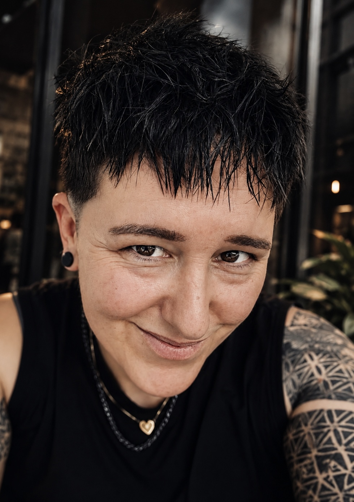

Hi, I'm Julia · UX & product designer · Digitalization & AI
I bring user,01 business02 and tech03 views together.
From project manager to designer and AI lover. Along the way I found what I enjoy most: structuring complex workflows and information, and turning them into something anyone can understand. Today I’m a T-shaped all-rounder: deep in UX and product design, broad across digitalization, AI, process and business.
StatusLooking for Design, Digitalization & AI roles. Remote-first, or hybrid around Innsbruck.
Write me
Try it · this page adapts to you
What are you hiring for?
Pick a role. Matching skills and tools light up.Skills & tools ↓
2026 – now
Personal projects: building with AI, for fun
My private playground, not a company. I build apps for the fun of it and train my AI skills by trying out new things. Innensicht is one of them.
2018 – now
Senior Consultant: Product Owner → UX Designer, Valtech Mobility
Connected mobility for OEMs and startups: in-car services, expert tools, mobility services. My responsibilities include client projects, pitches and presales, design systems, workflow definitions, IAM and AI team setup.
2023 – 2026
Co-Founder & CEO, 2gether App
I co-founded and led the startup, next to my job at Valtech. We released a native iOS and Android social media app. I owned the product from concept and design to release.
2012 – 2018
Process & Systems Integrator, Audi AG
Prepared steering committees and product decisions for the cross-brand connected-car project. Built cost transparency and a portfolio management process for budget control.
2011 – 2012
IT Consultant, WK IT
Drove internal restructuring and supported strategic purchasing.
2007 – 2011
B.A. Business Administration
Grade 1.7, University of applied sciences Landshut.
Structuring
Taking something messy and building a system that people actually want to use: boards, spaces, workflows, decisions.
Ref. P-01 Team workflows ↑Trying new things
New tools, new methods, new fields. I would rather build a quick test than talk about it for weeks.
Ref. P-04 Innensicht ↑Adapting to people & projects
Every team, user and project is different. I adapt the approach to fit them, not the other way round.
Ref. P-02 Expert Tools ↑Making information intuitive
Complex topics, shown so that people get them at a glance and can decide. From decision papers to pitches.
Ref. this pageSpeed
I get a topic quickly, I learn fast and I execute fast. No long ramp-up.
Proof Innensicht: first version in one afternoon ↑Structure & overview
I turn complexity into clear plans and keep the big picture in view.
Proof One Jira & Confluence setup for a whole team ↑Range
Design, product, tech and business in one person. Fewer handoffs, less friction.
Proof Business degree, Audi, product owner, designer, founder ↑Solutions, fast
I find a way forward and decide instead of getting stuck.
Proof Two user groups, one tool, features cut on purpose ↑Calm & warmth
I keep the team steady under pressure and bring people together.
Proof Reference letter, Valtech 2026, on request ↓Product design & UX
AI & digitalization
Process & organisation
Product & business
People & communication
Design & prototyping
Product & collaboration
AI
Build & ship
German
English
Spanish
2026
INU KI Kompetenzpass In progress
INU – Innovative University of Applied Sciences · responsible use of AI at work, with final test · KI Snack Week 2026
2026
AI Fluency: Framework & Foundations
Claude Academy (Anthropic) · verify
2026
Claude Code in Action
Claude Academy (Anthropic) · verify
2026
Claude 101
Claude Academy (Anthropic) · verify
2026
Certified Professional in Automotive Human-Machine Interaction
London School of Business and Administration (LSBA)
2024
Online courses
Udemy: Accessibility & WCAG, UX Design Critique, Responsive UX/UI in Figma, UX/UI Design Principles, UX Writing
2022
Certified UX & Usability Professional
Experience Design Institut (XDi)
2012
ITIL® Version 3 Foundation
TÜV SÜD Akademie